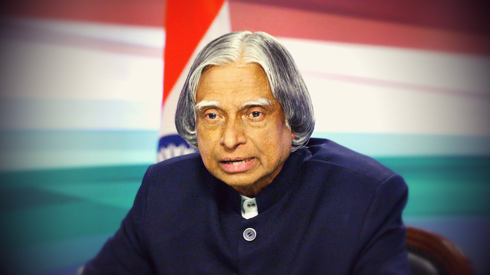

APJ ABDUL KALAM

Avul Pakir Jainulabdeen Abdul Kalam BR was an Indian aerospace scientist and statesman who served as the 11th president of India from 2002 to 2007.
About the Legend
- A.P.J. Abdul Kalam, in full Avul Pakir Jainulabdeen Abdul Kalam, (born October 15, 1931, Rameswaram, India—died July 27, 2015, Shillong), Indian scientist and politician who played a leading role in the development of India’s missile and nuclear weapons programs. He was president of India from 2002 to 2007.
- Kalam earned a degree in aeronautical engineering from the Madras Institute of Technology and in 1958 joined the Defence Research and Development Organisation (DRDO)
- In 1969 he moved to the Indian Space Research Organisation, where he was project director of the SLV-III, the first satellite launch vehicle that was both designed and produced in India.
- Rejoining DRDO in 1982, Kalam planned the program that produced a number of successful missiles, which helped earn him the nickname“Missile Man.” those successes was Agni, India’s first intermediate-range ballistic missile, which incorporated aspects of the SLV-III and was launched in 1989.
- From 1992 to 1997 Kalam was scientific adviser to the defense minister, and he later served as principal scientific adviser (1999–2001) to the government with the rank of cabinet minister.
- His prominent role in the countrys 1998 nuclear weapons tests solidified India as a nuclear power and established Kalam as a national hero, although the tests caused great concern in the international community.
- In 1998 Kalam put forward a countrywide plan called Technology Vision 2020, which he described as a road map for transforming India from a less-developed to a developed society in 20 years. The plan called for, among other measures, increasing agricultural productivity, emphasizing technology as a vehicle for economic growth, and widening access to health care and education.
- Kalam was nominated by the Hindu nationalist (Hindutva) NDA even though he was Muslim, and his stature and popular appeal were such that even the main opposition party, the Indian National Congress, also proposed his candidacy.
- Kalam easily won the election and was sworn in as Indias 11th president, a largely ceremonial post, in July 2002. He left office at the end of his term in 2007 and was succeeded by Pratibha Patil, the country’s first woman president.
- Upon returning to civilian life, Kalam remained committed to using science and technology to transform India into a developed country and served as a lecturer at several universities.
- On July 27, 2015, he collapsed while delivering a lecture at the Indian Institute of Management Shillong and was pronounced dead from cardiac arrest soon afterward.
- Kalam wrote several books, including an autobiography, Wings of Fire (1999). Among his numerous awards were two of the country’s highest honours, the Padma Vibhushan (1990) and the Bharat Ratna (1997).